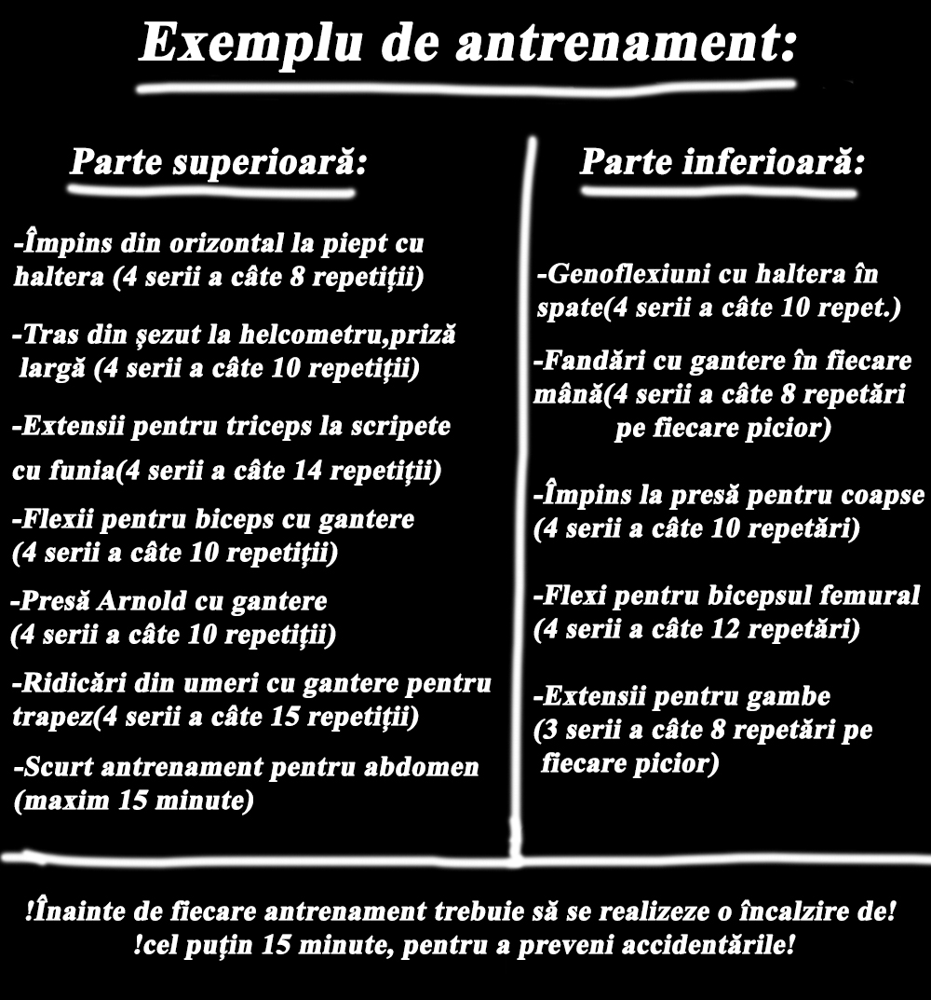
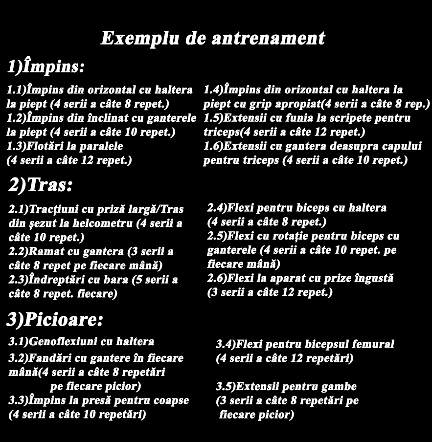

Parte superioară(U.B.) și parte inferioară(L.B.)
Antrenamentul implică mersul la sală de cel puțin două ori și până la șase ori pe săptămână. Fiecare exercițiu trebuie realizat cu greutatea adecvată, astfel încât să poți executa cel puțin 8 repetări, dar nu mai mult de 14 repetări din fiecare exercițiu (studiile au demonstrat că între 8 si 12 repetări se realizează cel mai bine hipertrofia musculară).
Acesta va consta în zile în care se va lucra partea superioară a corpului(piept, spate, biceps, triceps, umeri, trapez) și partea inferioară(picioare).Pe parcursul antrenamentului, fiecare grupă musculară, ce ține de partea antrenată în respectiva zi, este lucrată cel puțin o dată. Încălzirea de la început este vitală pentru a evita accidentările!
Exemplu de împărțire pe zile:LUNI:UB, MARȚI:LB, MIERCURI:-, JOI:UB, VINERI:LB, WEEKEND:-.
Avantaje:este foarte eficient pentru începători(mai puțin de 6 luni de sala) și fiecare grupă este antrenată de mai multe ori pe săptămână.
Dezavantaje:durează în general destul de mult(peste o oră pentru UB) și poate să nu mai fie eficient pentru cei care au trecut de primul an de sală.

Antrenament tras-împins-picioare
Antrenamentul acesta presupune mersul la sală între 3 și 6 dăți pe săptămână. Fiecare exercițiu trebuie sa fie realizat cu o greutate care să ne permită să realizăm între 8 și 14 repetări cu aceasta.
Exercițiile realizate într-o zi se bazează ori pe mișcări de împins, precum: flotările, împins la piept din înclinat, extensii la aparat cu funia sau mișcări ce țin de tras, precum: tracțiunile sau flexiile cu haltera; iar în fiecare a treia zi se vor antrena picioarele.
Exemplu de împărțire pe zile:LUNI:Împins, MARȚI:Tras, MIERCURI:Picioare, JOI:-, VINERI:Împins, SÂMBĂTĂ:Tras, DUMINICĂ:Picioare.
Avantaje:foarte bun pentru persoanele care au trecut de primele luni de sală și dezvoltă și forța mai mult ca alte tipuri de antrenamente.
Dezavantaje:nepotrivit pentru începători și numărul mare de dăți de mers la sală pe săptămână.
